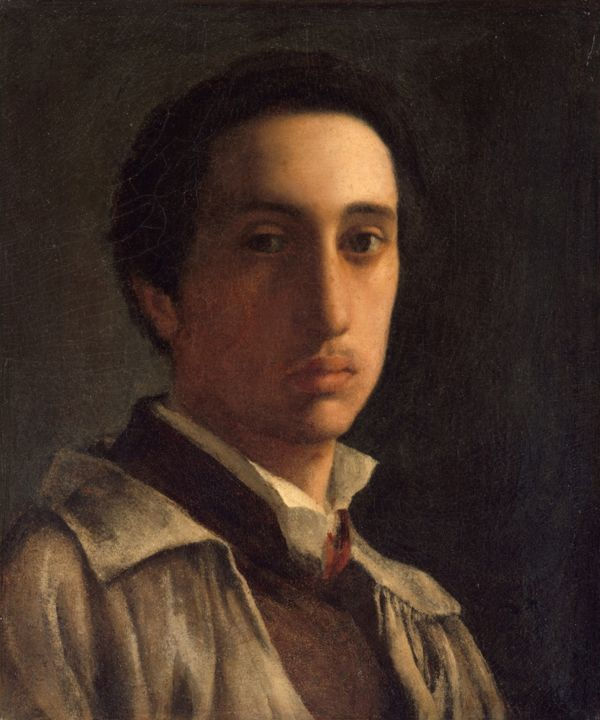

Edgar Degas (Parigi, 19 luglio 1834 – Parigi, 27 settembre 1917) è stato un pittore e scultore francese, considerato uno dei fondatori dell'impressionismo, anche se preferiva definirsi un realista. La sua arte è caratterizzata da una straordinaria capacità di cogliere il movimento, specialmente nelle scene di danza e vita quotidiana.
Vita
Analisi delle Opere
Edgar Degas ha creato alcune delle opere più celebri della pittura impressionista. La classe di danza è un esempio perfetto della sua capacità di rappresentare il movimento e la spontaneità della vita quotidiana.
Altre opere significative includono La bevitrice di assenzio e La famiglia Bellelli, che mostrano il suo interesse per la psicologia dei personaggi e l'uso innovativo della composizione e della luce.
Tecniche Pittoriche
Degas utilizzava una tecnica molto personale, combinando pittura e pastello per ottenere effetti di luce e movimento. I suoi lavori sono caratterizzati da inquadrature innovative, spesso ispirate alla fotografia e al teatro.
Pur essendo vicino all'impressionismo, evitava la pittura en plein air e preferiva lavorare in studio, studiando meticolosamente le pose e i gesti delle sue figure.
Galleria
Contesto Storico
Degas visse in un'epoca di profonde trasformazioni sociali e artistiche. L'impressionismo rivoluzionò il modo di concepire la pittura, ponendo l'accento sulla luce e sul movimento piuttosto che sul disegno accademico.
Tuttavia, Degas si distaccò dagli impressionisti tradizionali per il suo approccio più strutturato e analitico, ispirato alla pittura classica e alla fotografia.